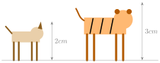
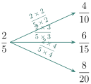
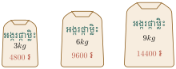
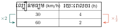

វត្ថុបំណង
- ប្រៀបធៀបបរិមាណពីរដោយប្រើផលធៀប
- បកស្រាយផលធៀបដោយអត្រា
- ដោះស្រាយចំណោទតាមសមាមាត្រស្របនិងសមាមាត្រច្រាស ។
1. ផលធៀបនៃបរិមាណពីរ
ឧទាហរណ៍ 1 ៖ គេប្រៀបធៀបកម្ពស់សត្វឆ្កែនិងសត្វខ្លា ។
ការប្រៀបធៀបបរិមាណទាំងពីរនេះ \(\displaystyle 2~\text{cm}\) លើ \(\displaystyle 3~\text{cm}\) អាចសរសេរជាទម្រង់ \(\displaystyle 2 : 3\) អានថា «ពីរលើបី» ។
ផលធៀបនេះគេអាចសរសេរជាប្រភាគ \(\displaystyle \frac{2}{3}\) ។ ដូច្នេះគេអាចប្រៀបធៀបបរិមាណពីរដែលមានឯកតាដូចគ្នា ។

ផលធៀបនៃ \(\displaystyle a\) និង \(\displaystyle b\) ដែល \(\displaystyle a\) និង \(\displaystyle b\) ជាចំនួនគត់ (\(\displaystyle b \neq 0\)) ហើយតាងបរិមាណពីរដែលមានឯកតាដូចគ្នា គេអាចសរសេរជាទម្រង់ \(\displaystyle a : b\) ឬ \(\displaystyle \frac{a}{b}\) ។
លំហាត់គំរូ ៖ នៅក្នុងថ្នាក់ទី 7 «ក» មានសិស្ស 45 នាក់ ក្នុងនោះមានសិស្សស្រី 15 នាក់ ។ រកផលធៀបសិស្សប្រុសនិងសិស្សស្រី ។
ដំណោះស្រាយ
ចំនួនសិស្សប្រុសនៅក្នុងថ្នាក់ទី 7 «ក» មាន \(\displaystyle 45\text{ នាក់} - 15\text{ នាក់} = 30\text{ នាក់}\) ។
ផលធៀបសិស្សប្រុសនិងសិស្សស្រីគឺ \(\displaystyle 30 : 15\) ឬ \(\displaystyle \frac{30}{15} = \frac{2}{1}\) ។
ប្រតិបត្តិ 1 ៖ រកផលធៀប ក. \(\displaystyle 50~\text{g}\) និង \(\displaystyle 200~\text{g}\) ខ. \(\displaystyle 700~\text{g}\) និង \(\displaystyle 1~\text{kg}\) ។
ចម្លើយ
ក. \(\displaystyle \frac{50}{200} = \frac{1}{4}\) ខ. \(\displaystyle 1~\text{kg} = 1~000~\text{g} \implies \frac{700}{1~000} = \frac{7}{10}\) ។
ប្រតិបត្តិ 2 ៖ លោកប៊ុនណារកប្រាក់បាន \(\displaystyle \$1~200\) ហើយបានចំណាយអស់ \(\displaystyle \$450\) ក្នុងមួយខែ ។ រកផលធៀប ៖
ក. ប្រាក់ចំណូលរបស់គាត់និងប្រាក់ចំណាយរបស់គាត់
ខ. ប្រាក់សន្សំរបស់គាត់និងប្រាក់ចំណូលរបស់គាត់ ។
ចម្លើយ
ក. \(\displaystyle \frac{1200}{450} = \frac{8}{3}\)
ខ. ប្រាក់សន្សំគឺ \(\displaystyle 1~200 - 450 = 750\) ដុល្លារ នោះផលធៀបគឺ \(\displaystyle \frac{750}{1200} = \frac{5}{8}\) ។
2. ផលធៀបស្មើគ្នា
ឧទាហរណ៍ 1 ៖ អ្នកបានរៀនរួចមកហើយថា ៖
ផលធៀប \(\displaystyle \frac{2}{5}, \frac{4}{10}, \frac{6}{15}, \frac{8}{20}\) ជាផលធៀបសមមូលគ្នា ។

ឧទាហរណ៍ 2 ៖ បុរសបីនាក់ \(\displaystyle A, B\) និង \(\displaystyle C\) បានចែកប្រាក់ចំណេញគ្នាក្នុងការរកស៊ីចូលហ៊ុនគ្នាមួយ ។ ពួកគេបានទទួលប្រាក់ \(\displaystyle \$4~000, \$3~000\) និង \(\displaystyle \$1~000\) រៀងគ្នា ។
ផលធៀបចំណែកប្រាក់ចំណេញរបស់ពួកគេគឺ \(\displaystyle 4000 : 3000 : 1000\) ឬ \(\displaystyle 4 : 3 : 1\) ។
ដើម្បីឱ្យដឹងថាផលធៀបណាខ្លះសមមូលគ្នា គេត្រូវសរសេរផលធៀបទាំងនោះជាទម្រង់ \(\displaystyle \frac{a}{b}\) បន្ទាប់មកជ្រើសរើសយកប្រភាគណាដែលស្មើគ្នា ។
លំដាប់ក្នុងការសរសេរផលធៀបមានសារៈសំខាន់ណាស់ ។
- ផលធៀបគ្មានខ្នាតទេ ។
- ផលធៀបអាចប្រើដើម្បីធ្វើការប្រៀបធៀបបរិមាណច្រើនជាងពីរ ។
លំហាត់គំរូ ៖ មុំក្នុងនៃចតុកោណមួយមានរង្វាស់ \(\displaystyle 40^\circ, 60^\circ, 120^\circ\) និង \(\displaystyle 140^\circ\) ។ រកផលធៀបនៃរង្វាស់មុំទាំងនេះតាមលំដាប់ដែលឱ្យ ។
បើ \(\displaystyle a, b, c\) និង \(\displaystyle d\) ជារង្វាស់មុំក្នុងចតុកោណតាមលំដាប់ដែលឱ្យ គេបានផលធៀបនៃមុំនេះគឺ ៖
ខាងក្រោមនេះ តើផលធៀបណាខ្លះជាផលធៀបសមមូលគ្នា?
\(\displaystyle 6 : 8, \quad 18 : 28, \quad 15 : 20, \quad \frac{3}{8} : 2, \quad 0.9 : 1.5\) ។
មើលចម្លើយ
\(\displaystyle \frac{6}{8} = \frac{3}{4}\), \(\displaystyle \frac{18}{28} = \frac{9}{14}\), \(\displaystyle \frac{15}{20} = \frac{3}{4}\), \(\displaystyle \frac{3/8}{2} = \frac{3}{16}\), \(\displaystyle \frac{0.9}{1.5} = \frac{3}{5}\)
ដូចនេះ ផលធៀបសមមូលគ្នាគឺ \(\displaystyle 6 : 8 = 15 : 20\) ។
3. អត្រានិងល្បឿនមធ្យម
3.1. អត្រា
ឧទាហរណ៍ ៖
ក. បើពងទាមួយឡូតិ៍ថ្លៃ \(\displaystyle 8~400~\text{៛}\) តើពងទា 30 គ្រាប់ថ្លៃប៉ុន្មានរៀល?
ខ. រថយន្តមួយធ្វើដំណើរចម្ងាយ \(\displaystyle 570~\text{km}\) ស៊ីសាំងអស់ \(\displaystyle 60~\ell\) ។ បើរថយន្តនោះធ្វើដំណើរចម្ងាយ \(\displaystyle 190~\text{km}\) តើរថយន្តស៊ីសាំងអស់ប៉ុន្មានលីត្រ?
ដំណោះស្រាយ
ក. ពងទា 1 គ្រាប់ថ្លៃ \(\displaystyle = \frac{8~400~\text{៛}\rule[-0.5em]{0pt}{1.55em}}{12\text{ ពងទា}\rule[-0.5em]{0pt}{1.55em}}\) ឬ អត្រា \(\displaystyle = \frac{8~400}{12} = 700~\text{៛}\) ក្នុងពងទា 1 គ្រាប់
ដូចនេះពងទា 30 គ្រាប់ថ្លៃ \(\displaystyle = 700~\text{៛} \times 30 = 21~000~\text{៛}\) ។
ខ. ក្នុង \(\displaystyle 1~\text{km}\) ស៊ីសាំងអស់ \(\displaystyle = \frac{60~\ell}{570~\text{km}}\)
អត្រា \(\displaystyle = \frac{60}{570} = \frac{2}{19}~\ell\) ក្នុង \(\displaystyle 1~\text{km}\) គេកំណត់សរសេរ អត្រា \(\displaystyle = \frac{2}{19}~\ell/\text{km}\)
ដូចនេះបើរថយន្តធ្វើដំណើរ \(\displaystyle 190~\text{km}\) ស៊ីសាំងអស់ \(\displaystyle = \frac{2}{19} \times 190 = 20~\ell\) ។
ប្រភាគនីមួយៗនេះខុសគ្នាពីផលធៀបដោយវាទាក់ទងនឹងបរិមាណពីរប្រភេទដែលមានឯកតាខុសគ្នា ។ ប្រភាគនីមួយៗនេះហៅថា អត្រា « / » ។
3.2. ល្បឿនមធ្យម
ឧទាហរណ៍ ៖ ចាន់ដារ៉ានិងណារ៉ុងបានជិះកង់ប្រណាំងគ្នាលើចម្ងាយផ្លូវ \(\displaystyle 90~\text{km}\) ប្រើអស់ពេល 5 ម៉ោង និង \(\displaystyle 4\frac{1}{2}\) ម៉ោងរៀងគ្នា ។ តើអ្នកណាធ្វើដំណើរលឿនជាង?
ណារ៉ុងបានធ្វើដំណើរលឿនជាង ព្រោះគាត់ប្រើពេលអស់តិចជាង ដើម្បីបញ្ចប់ការប្រណាំងនេះ ។ គេក៏អាចបង្ហាញអត្រា ឬល្បឿនរបស់អ្នកទាំងពីរ ៖
ចាន់ដារ៉ា ៖ អត្រា ឬល្បឿនមធ្យម \(\displaystyle = \frac{90~\text{km}}{5~\text{h}} = 18~\text{km/h}\) ។
ណារ៉ុង ៖ អត្រា ឬល្បឿនមធ្យម \(\displaystyle = \frac{90~\text{km}}{4\frac{1}{2}~\text{h}} = 20~\text{km/h}\) ។
ដូចនេះ ណារ៉ុងធ្វើដំណើរបានលឿនជាង ព្រោះគាត់ធ្វើដំណើរដោយល្បឿនធំជាង និងប្រើរយៈពេលតិចជាង ។
ដែល \(\displaystyle v\) ជាល្បឿនមធ្យម, \(\displaystyle d\) ជាចម្ងាយចរ និង \(\displaystyle t\) ជារយៈពេលចរ ។
លំហាត់គំរូ 1 ៖ អ្នកជិះកង់ម្នាក់កំពុងធ្វើដំណើរដោយល្បឿនមធ្យម \(\displaystyle 18~\text{km/h}\) ។
ក. សរសេរល្បឿនមធ្យមរបស់គាត់គិតជា \(\displaystyle \text{m/s}\) ។
ខ. រកចម្ងាយចរដែលគាត់ធ្វើដំណើរក្នុងរយៈពេល 3 ម៉ោង ។
ដំណោះស្រាយ
ក. \(\displaystyle 18~\text{km} = 18 \times 1~000~\text{m} = 18~000~\text{m}\), \(\displaystyle 1~\text{h} = 60 \times 60 = 3~600~\text{s}\)
ដូចនេះ \(\displaystyle 18~\text{km/h} = \frac{18 \times 1~000~\text{m}}{3~600~\text{s}} = 5~\text{m/s}\) ។
ខ. ក្នុងរយៈពេល \(\displaystyle 3~\text{h}\) អ្នកជិះកង់ធ្វើដំណើរបាន \(\displaystyle 18 \times 3 = 54~\text{km}\) ។
លំហាត់គំរូ 2 ៖ រថភ្លើងមួយធ្វើដំណើរដោយល្បឿនមធ្យម \(\displaystyle 15~\text{m/s}\) ។
ក. រករយៈពេលដែលរថភ្លើងចរក្នុងចម្ងាយផ្លូវ \(\displaystyle 750~\text{m}\) ។
ខ. បើរថភ្លើងនេះចេញដំណើរពីស្ថានីយ A នៅម៉ោង 8 ព្រឹក ។ តើរថភ្លើងនេះទៅដល់ស្ថានីយ B នៅម៉ោងប៉ុន្មាន? បើពី A ទៅ B មានចម្ងាយផ្លូវកាត់គ្នា \(\displaystyle 36~\text{km}\) ។
ដំណោះស្រាយ
ក. \(\displaystyle d = 750~\text{m}, v = 15~\text{m/s} \implies t = \frac{d}{v} = \frac{750}{15} = 50~\text{s}\)
ដូចនេះ រយៈពេលចរស្មើនឹង \(\displaystyle 50~\text{s}\) ។
ខ. \(\displaystyle d = 36~\text{km} = 36~000~\text{m}\)
\(\displaystyle t = \frac{d}{v} = \frac{36~000}{15} = 2~400~\text{s} = \frac{2~400}{60} = 40~\text{mn}\)
ដូចនេះ រថភ្លើងនេះទៅដល់ស្ថានីយ B នៅម៉ោង \(\displaystyle 8~\text{h}~40~\text{mn}\) ព្រឹក ។
បើរថយន្តមួយធ្វើដំណើរក្នុងចម្ងាយផ្លូវ \(\displaystyle 91~\text{km}\) វាស៊ីសាំងអស់ \(\displaystyle 7~\ell\) ។
ក. តើរថយន្តនេះធ្វើដំណើរបានចម្ងាយប៉ុន្មាន \(\displaystyle \text{km}\) បើមានសាំង \(\displaystyle 15~\ell\)?
ខ. តើម្ចាស់រថយន្តនេះបានចំណាយប្រាក់លើថ្លៃសាំងអស់ប៉ុន្មានរៀលនៅពេលគាត់ធ្វើដំណើរបានចម្ងាយ \(\displaystyle 260~\text{km}\) ដោយសាំង \(\displaystyle 1~\ell\) ថ្លៃ \(\displaystyle 4~000~\text{៛}\)?
មើលចម្លើយ
ក. អត្រាស៊ីសាំងគឺ \(\displaystyle \frac{91}{7} = 13~\text{km}/\ell\) នោះចម្ងាយចរគឺ \(\displaystyle 15 \times 13 = 195~\text{km}\) ។
ខ. សាំងដែលត្រូវប្រើសម្រាប់ \(\displaystyle 260~\text{km}\) គឺ \(\displaystyle \frac{260}{13} = 20~\ell\) ។
ប្រាក់ត្រូវចំណាយគឺ \(\displaystyle 20 \times 4~000 = 80~000~\text{៛}\) ។
4. សមាមាត្រ
4.1. សមាមាត្រស្រប
ឧទាហរណ៍ ៖ អង្ករនៅក្នុងថង់នីមួយៗមានម៉ាសខុសៗគ្នា និងត្រូវលក់ក្នុងតម្លៃខុសៗគ្នា ។

គេធ្វើផលធៀបម៉ាសនិងផលធៀបតម្លៃរបស់វារៀងគ្នាដូចខាងក្រោម ៖
| ផលធៀបម៉ាស | ផលធៀបតម្លៃ |
| \(\displaystyle 3~\text{kg} : 6~\text{kg} = 1 : 2\) | \(\displaystyle 4~800~\text{៛} : 9~600~\text{៛} = 1 : 2\) |
| \(\displaystyle 3~\text{kg} : 9~\text{kg} = 1 : 3\) | \(\displaystyle 4~800~\text{៛} : 14~400~\text{៛} = 1 : 3\) |
| \(\displaystyle 6~\text{kg} : 9~\text{kg} = 2 : 3\) | \(\displaystyle 9~600~\text{៛} : 14~400~\text{៛} = 2 : 3\) |
គេកត់សម្គាល់ឃើញថា ផលធៀបម៉ាសនិងផលធៀបតម្លៃរបស់វាស្មើគ្នា ។
គេនិយាយថាតម្លៃសមាមាត្រទៅនឹងម៉ាស ឬតម្លៃជាសមាមាត្រស្របទៅនឹងម៉ាស ។
គេសម្គាល់ឃើញថា គូផលធៀបតម្លៃនិងម៉ាសរៀងគ្នា \(\displaystyle \frac{3}{6}\) និង \(\displaystyle \frac{4~800}{9~600}\), \(\displaystyle \frac{3}{9}\) និង \(\displaystyle \frac{4~800}{14~400}\), \(\displaystyle \frac{6}{9}\) និង \(\displaystyle \frac{9~600}{14~400}\) ជាផលធៀបសមមូលគ្នា ។
ដូច្នេះ \(\displaystyle \frac{3}{6}\) និង \(\displaystyle \frac{4~800}{9~600}\), \(\displaystyle \dots\) គឺជាសមាមាត្រ ហើយចំនួន 3 និង 6, 4 800 និង 9 600, \(\displaystyle \dots\) ហៅថា គូនៃសមាមាត្រ ។
កាលណាបរិមាណពីរគូមានផលធៀបស្មើគ្នា បរិមាណទាំងនេះជាគូនៃសមាមាត្រ ។
បើ \(\displaystyle a_1, a_2, b_1, b_2\) ជាបួនចំនួនខុសពីសូន្យ គេថាគូ \(\displaystyle (a_1, a_2)\) និង \(\displaystyle (b_1, b_2)\) ជាគូសមាមាត្រគ្នា បើវាមានចំនួន \(\displaystyle k\) មួយដែល \(\displaystyle b_1 = ka_1\) និង \(\displaystyle b_2 = ka_2\) ។
លក្ខខណ្ឌនេះ គេអាចសរសេរ ៖
ចំពោះ \(\displaystyle \frac{a_1}{b_1} = \frac{a_2}{b_2}\) បើគេគុណអង្គទាំងពីរនៃសមាមាត្រនឹង \(\displaystyle b_1 b_2\) គេបាន ៖
ដូចនេះ ៖
\[\frac{a_1}{b_1} = \frac{a_2}{b_2} \iff a_1 b_2 = a_2 b_1\]
បើ \(\displaystyle k\) ជាតម្លៃរួមនៃផលធៀប \(\displaystyle \frac{b_1}{a_1}\) និង \(\displaystyle \frac{b_2}{a_2}\) គេបាន \(\displaystyle b_1 = ka_1\) និង \(\displaystyle b_2 = ka_2\)
ដូចនេះ \(\displaystyle \frac{b_1 + b_2}{a_1 + a_2} = \frac{k(a_1 + a_2)}{a_1 + a_2} = k\) ។ គេបានលក្ខណៈដូចខាងក្រោម ៖
\(\displaystyle a_1\) និង \(\displaystyle a_2\) ជាពីរចំនួនខុសពីសូន្យដែល \(\displaystyle a_1 + a_2 \neq 0\)
បើ \(\displaystyle \frac{b_1}{a_1} = \frac{b_2}{a_2}\) នោះគេបាន \(\displaystyle \frac{b_1}{a_1} = \frac{b_2}{a_2} = \frac{b_1 + b_2}{a_1 + a_2}\) ។
ដូចគ្នាដែរ \(\displaystyle a_1, a_2, a_3\) ជាបីចំនួនខុសពីសូន្យដែល \(\displaystyle a_1 + a_2 + a_3 \neq 0\)
បើ \(\displaystyle \frac{b_1}{a_1} = \frac{b_2}{a_2} = \frac{b_3}{a_3}\) នោះគេបាន \(\displaystyle \frac{b_1}{a_1} = \frac{b_2}{a_2} = \frac{b_3}{a_3} = \frac{b_1 + b_2 + b_3}{a_1 + a_2 + a_3}\) ។
លំហាត់គំរូ 1 ៖ រកថ្លៃទំនិញ \(\displaystyle 13~\text{kg}\) បើទំនិញ \(\displaystyle 6~\text{kg}\) ថ្លៃ \(\displaystyle 90~000~\text{៛}\) ។
ដំណោះស្រាយ
តាង \(\displaystyle x\) (រៀល) ជាថ្លៃទំនិញ \(\displaystyle 13~\text{kg}\) គេបានសមាមាត្រ ៖
ដូចនេះ ទំនិញ \(\displaystyle 13~\text{kg}\) ថ្លៃ \(\displaystyle 195~000~\text{៛}\) ។
លំហាត់គំរូ 2 ៖ នាយកសាលាបានចំណាយប្រាក់ \(\displaystyle 120~000~\text{៛}\) ជូនរង្វាន់ដល់សិស្សពូកែបីនាក់ដែលជាប់ចំណាត់ថ្នាក់ពីលេខ 1 ដល់លេខ 3 ។ ចំនួនប្រាក់ដែលសិស្សម្នាក់ៗទទួលបានសមាមាត្រនឹង 3, 2 និង 1 រៀងគ្នា ។ រកប្រាក់ដែលសិស្សម្នាក់ៗទទួលបាន ។
ដំណោះស្រាយ
តាង \(\displaystyle a_1, a_2, a_3\) ជាចំនួនប្រាក់ដែលសិស្សម្នាក់ៗទទួលបានរៀងគ្នា ។
ដោយ \(\displaystyle a_1, a_2, a_3\) និង 3, 2, 1 សមាមាត្រគ្នា គេបាន ៖
គេទាញបាន ៖
\(\displaystyle a_1 = 20~000 \times 3 = 60~000~\text{៛}\)
\(\displaystyle a_2 = 20~000 \times 2 = 40~000~\text{៛}\)
\(\displaystyle a_3 = 20~000 \times 1 = 20~000~\text{៛}\)
ដូចនេះ សិស្សម្នាក់ៗដែលជាប់ចំណាត់ថ្នាក់លេខ 1 ដល់លេខ 3 ទទួលបានរង្វាន់រៀងគ្នាគឺ \(\displaystyle 60~000~\text{៛}, 40~000~\text{៛}, 20~000~\text{៛}\) ។
អត្រាប្តូរប្រាក់ ជាតម្លៃរូបិយវត្ថុរបស់ប្រទេសមួយធៀបនឹងរូបិយបណ្ណរបស់ប្រទេសដទៃទៀត ។
ឧទាហរណ៍ ៖ \(\displaystyle 4~050~\text{រៀល} = 1~\text{ដុល្លារអាមេរិក}\) ។
លំហាត់គំរូ 3 ៖ អត្រាប្តូរប្រាក់ 1 ដុល្លារអាមេរិកធៀបនឹងប្រាក់រៀលគឺ \(\displaystyle 4~050~\text{៛}\) ។ បើមីងយ៉ាប្តូរប្រាក់ \(\displaystyle 40~\$\) (ប្រាក់ដុល្លារអាមេរិក) តើគាត់ទទួលបានប្រាក់រៀលចំនួនប៉ុន្មាន?
ដំណោះស្រាយ
គណនាចំនួនប្រាក់រៀលដែលមីងយ៉ាទទួលបាន ៖
តាង \(\displaystyle x\) ជាចំនួនប្រាក់រៀល គេបានសមាមាត្រ ៖
ដូច្នេះមីងយ៉ាទទួលបានប្រាក់ \(\displaystyle 162~000~\text{៛}\) ពីការប្តូរប្រាក់ \(\displaystyle 40~\$\) ។
ប្រតិបត្តិ 1 ៖ អត្រាប្តូរប្រាក់រវាងប្រាក់រៀលធៀបនឹងប្រាក់បាតថៃគឺ \(\displaystyle 129~\text{៛}\) ស្មើនឹង \(\displaystyle 1~\text{បាត}\) ។ បើវិចិត្រយកប្រាក់ \(\displaystyle 193~500~\text{៛}\) ទៅប្តូរជាប្រាក់បាតថៃ តើគាត់ទទួលបានប្រាក់បាតថៃចំនួនប៉ុន្មាន?
ចម្លើយ
\(\displaystyle \frac{193~500}{129} = 1~500\) បាត ។
ប្រតិបត្តិ 2 ៖ ប្រសិនបើ \(\displaystyle 1~\text{¥}\) (ប្រាក់យ៉េនចិន) ស្មើនឹង \(\displaystyle 579~\text{៛}\) ចូរគណនាប្រាក់រៀលទទួលបានពីការប្តូរប្រាក់ចំនួន \(\displaystyle 35~\text{¥}\) ។
ចម្លើយ
\(\displaystyle 35 \times 579 = 20~265~\text{៛}\) ។
ប្រតិបត្តិ 3 ៖ តើបរិមាណខាងក្រោម សមាមាត្រទៅនឹងបរិមាណមួយទៀតដែរឬទេ?
ក. មាឌ (\(\displaystyle V\)): \(\displaystyle 16~\text{cm}^3, 24~\text{cm}^3\) និង ម៉ាស (\(\displaystyle m\)): \(\displaystyle 300~\text{g}, 450~\text{g}\)
ខ. រយៈពេល (\(\displaystyle t\)): \(\displaystyle 300~\text{mn}, 50~\text{mn}\) និង ចម្ងាយចរ (\(\displaystyle d\)): \(\displaystyle 60~\text{km}, 80~\text{km}\) ។
ចម្លើយ
ក. \(\displaystyle \frac{16}{24} = \frac{2}{3}\) និង \(\displaystyle \frac{300}{450} = \frac{2}{3}\) ដូចនេះ មាឌនិងម៉ាសសមាមាត្រនឹងគ្នា ។
ខ. \(\displaystyle \frac{300}{50} = 6\) និង \(\displaystyle \frac{60}{80} = \frac{3}{4}\) មិនស្មើគ្នា ដូចនេះមិនសមាមាត្រនឹងគ្នាទេ ។
ប្រតិបត្តិ 4 ៖ គេឱ្យ \(\displaystyle a : b : c = 5 : 3 : 8\) និង \(\displaystyle b = 36~000~\text{៛}\) ។ រកតម្លៃ \(\displaystyle a\) និង \(\displaystyle c\) ។
ចម្លើយ
\(\displaystyle \frac{a}{5} = \frac{b}{3} = \frac{c}{8} \implies \frac{a}{5} = \frac{36~000}{3} = 12~000 \implies a = 60~000~\text{៛}\) និង \(\displaystyle c = 12~000 \times 8 = 96~000~\text{៛}\) ។
4.2. សមាមាត្រច្រាស
ឧទាហរណ៍ ៖ រយៈពេលធ្វើដំណើរដោយរថយន្តមួយលើចម្ងាយផ្លូវ \(\displaystyle 120~\text{km}\) មានល្បឿនមធ្យមផ្សេងៗគ្នារួមមាន ៖
| ល្បឿនមធ្យម (\(\displaystyle \text{km/h}\)) | រយៈពេលចរ (ម៉ោង) |
| 20 | 6 |
| 30 | 4 |
| 40 | 3 |
| 60 | 2 |
| 120 | 1 |
តាមការសង្កេតតារាងខាងលើឃើញថាល្បឿនរបស់រថយន្តកាន់តែធំ រយៈពេលចរកាន់តែតិច ។
ករណី 1 ៖ ល្បឿនមធ្យមស្មើនឹងពីរដងនៃល្បឿនដើម ។ រយៈពេលចរថយពាក់កណ្តាល \(\displaystyle \frac{1}{2}\) ។

ដូចនេះ \(\displaystyle 30~\text{km/h} : 60~\text{km/h} = 2~\text{h} : 4~\text{h}\) ឬ \(\displaystyle \frac{30~\text{km/h}}{60~\text{km/h}} = \frac{2~\text{h}}{4~\text{h}}\) ។
ករណី 2 ៖ ល្បឿនមធ្យមស្មើនឹងបីដងនៃល្បឿនដើម ។ រយៈពេលចរស្មើនឹង \(\displaystyle \frac{1}{3}\) នៃរយៈពេលចរខាងដើម ។
ដូចនេះ \(\displaystyle 40~\text{km/h} : 120~\text{km/h} = 1~\text{h} : 3~\text{h}\) ឬ \(\displaystyle \frac{40~\text{km/h}}{120~\text{km/h}} = \frac{1~\text{h}}{3~\text{h}}\) ។
ឧទាហរណ៍ខាងលើនេះ ជាសមាមាត្រច្រាសដែលរយៈពេលចរជាសមាមាត្រច្រាសទៅនឹងល្បឿនមធ្យម ។
លំហាត់គំរូ 1 ៖ បុរស 10 នាក់អាចលើកឥដ្ឋមួយគំនរហើយក្នុងរយៈពេល 4 ម៉ោង ។ បើបុរស 5 នាក់លើកឥដ្ឋដដែលនោះ តើត្រូវប្រើពេលប៉ុន្មានទើបហើយ?
ដំណោះស្រាយ
តាង \(\displaystyle t\) (ម៉ោង) ជារយៈពេលដែលបុរស 5 នាក់លើកឥដ្ឋហើយ ។
ដោយចំនួនមនុស្សនិងរយៈពេលជាសមាមាត្រច្រាស គេបាន ៖
ដូចនេះ បុរស 5 នាក់ត្រូវប្រើរយៈពេល 8 ម៉ោងទើបលើកឥដ្ឋនោះហើយ ។
លំហាត់គំរូ 2 ៖ គេឱ្យ \(\displaystyle a : b : c = 3 : 5 : 9\) និង \(\displaystyle c - a = 72\) ។ រកតម្លៃនៃ \(\displaystyle a + b + c\) ។
ដំណោះស្រាយ
គេមាន \(\displaystyle \frac{a}{3} = \frac{b}{5} = \frac{c}{9} = \frac{a + b + c}{3 + 5 + 9} = \frac{a + b + c}{17}\)
ម្យ៉ាងទៀត \(\displaystyle \frac{c}{9} = \frac{a}{3} = \frac{c - a}{9 - 3} = \frac{c - a}{6}\)
គេបាន \(\displaystyle \frac{a + b + c}{17} = \frac{c - a}{6} \implies a + b + c = \frac{17}{6} \times (c - a) = \frac{17}{6} \times 72 = 204\) ។
លំហាត់គំរូ 3 ៖ សំចង់សន្សំប្រាក់ដើម្បីទិញកង់មួយគ្រឿង ។ បើគាត់សន្សំ \(\displaystyle 30~000~\text{៛}\) ក្នុងមួយសប្តាហ៍ គាត់ត្រូវចំណាយពេលចំនួន 20 សប្តាហ៍ ។ បើគាត់សន្សំប្រាក់ \(\displaystyle 50~000~\text{៛}\) ក្នុងមួយសប្តាហ៍វិញ តើគាត់ត្រូវចំណាយពេលប៉ុន្មានសប្តាហ៍ដើម្បីអាចទិញកង់នោះបាន?
ដំណោះស្រាយ
តាង \(\displaystyle t\) (សប្តាហ៍) ជាចំនួនសប្តាហ៍ដែលសំត្រូវសន្សំប្រាក់ ៖
ដូច្នេះសំត្រូវសន្សំប្រាក់ចំនួន 12 សប្តាហ៍ ដើម្បីអាចទិញកង់បាន ។
ប្រតិបត្តិ 1 ៖ កសិករម្នាក់មានចំណីសម្រាប់ផ្គត់ផ្គង់គោរបស់គាត់ 40 ក្បាលបាន 35 ថ្ងៃ ។ បើគាត់ទិញគោ 10 ក្បាលបន្ថែមទៀត តើគាត់អាចផ្គត់ផ្គង់ចំណីដែលឱ្យគោបានប៉ុន្មានថ្ងៃ?
ចម្លើយ
ចំនួនគោសរុបគឺ \(\displaystyle 40 + 10 = 50\) ក្បាល ។
តាង \(\displaystyle x\) ជាចំនួនថ្ងៃដែលគោ 50 ក្បាលអាចស៊ីចំណីនោះបាន ៖
ដោយចំនួនគោនិងចំនួនថ្ងៃជាសមាមាត្រច្រាស គេបាន ៖
ដូចនេះ គាត់អាចផ្គត់ផ្គង់ចំណីឱ្យគោបាន 28 ថ្ងៃ ។
ប្រតិបត្តិ 2 ៖ ម្តាយឱ្យប្រាក់ចិន្តាទៅទិញសៀវភៅ ។ បើសៀវភៅមួយក្បាលថ្លៃ \(\displaystyle 1~000~\text{៛}\) នោះចិន្តាអាចទិញសៀវភៅបាន 12 ក្បាល ។ ប្រសិនបើសៀវភៅមួយក្បាលថ្លៃ \(\displaystyle 1~200~\text{៛}\) តើចិន្តាអាចទិញសៀវភៅបានប៉ុន្មានក្បាល?
ចម្លើយ
\(\displaystyle 1~000 \times 12 = 1~200 \times x \implies x = \frac{12~000}{1~200} = 10\) ក្បាល ។
លំហាត់
រកផលធៀបនៃបរិមាណខាងក្រោម ហើយសរសេរផលធៀបទាំងនោះជាទម្រង់ \(\displaystyle \frac{a}{b}\) ៖
- ក. \(\displaystyle 8~\text{cm}\) និង \(\displaystyle 17~\text{cm}\)
- ខ. \(\displaystyle 3~800~\text{៛}\) និង \(\displaystyle 1~500~\text{៛}\)
- គ. \(\displaystyle 1\frac{1}{2}\text{ ថ្ងៃ}\) និង \(\displaystyle 13\text{ ម៉ោង}\) ។
មើលដំណោះស្រាយ
- ក. \(\displaystyle \frac{8}{17}\)
- ខ. \(\displaystyle \frac{3~800}{1~500} = \frac{38}{15}\)
- គ. \(\displaystyle 1\frac{1}{2}\text{ ថ្ងៃ} = \frac{3}{2} \times 24 = 36\text{ ម៉ោង} \implies \frac{36}{13}\) ។
តើគូផលធៀបណា ជាផលធៀបសមមូលគ្នា?
- ក. \(\displaystyle 5 : 4\) និង \(\displaystyle 35 : 28\)
- ខ. \(\displaystyle 63 : 27\) និង \(\displaystyle 9 : 7\)
- គ. \(\displaystyle 1\frac{1}{2} : 2\) និង \(\displaystyle \frac{3}{4} : 1\) ។
មើលដំណោះស្រាយ
- ក. \(\displaystyle \frac{5}{4}\) និង \(\displaystyle \frac{35}{28} = \frac{5}{4}\) ស្មើគ្នា ដូចនេះជាផលធៀបសមមូលគ្នា ។
- ខ. \(\displaystyle \frac{63}{27} = \frac{7}{3}\) និង \(\displaystyle \frac{9}{7}\) មិនស្មើគ្នា ដូចនេះមិនមែនជាផលធៀបសមមូលគ្នាទេ ។
- គ. \(\displaystyle 1\frac{1}{2} : 2 = \frac{3}{4}\) និង \(\displaystyle \frac{3}{4} : 1 = \frac{3}{4}\) ស្មើគ្នា ដូចនេះជាផលធៀបសមមូលគ្នា ។
នីតាមានអាយុ 12 ឆ្នាំ និងឪពុករបស់នាងមានអាយុ 35 ឆ្នាំ ។ សរសេរផលធៀបអាយុរបស់នីតានិងអាយុរបស់ឪពុកនាងជាទម្រង់ \(\displaystyle a : b\) ។
មើលដំណោះស្រាយ
ផលធៀបអាយុរបស់នីតានិងឪពុកនាងគឺ ៖
\[12 : 35\]ការ៉េពីរមានជ្រុងប្រវែង \(\displaystyle 4~\text{cm}\) និង \(\displaystyle 6~\text{cm}\) រៀងគ្នា ។ រកផលធៀប ៖
- ក. ជ្រុងនៃការ៉េទាំងពីរ
- ខ. បរិមាត្រនៃការ៉េទាំងពីរ
- គ. ផ្ទៃក្រឡានៃការ៉េទាំងពីរ ។
មើលដំណោះស្រាយ
- ក. ផលធៀបជ្រុង ៖ \(\displaystyle \frac{4}{6} = \frac{2}{3}\) (ឬ \(\displaystyle 2 : 3\))
- ខ.
បរិមាត្រការ៉េទី 1 គឺ \(\displaystyle 4 \times 4 = 16~\text{cm}\), បរិមាត្រការ៉េទី 2 គឺ \(\displaystyle 4 \times 6 = 24~\text{cm}\) ៖
\[\frac{16}{24} = \frac{2}{3} \quad (\text{ឬ } 2 : 3)\] - គ.
ផ្ទៃក្រឡាការ៉េទី 1 គឺ \(\displaystyle 4^2 = 16~\text{cm}^2\), ផ្ទៃក្រឡាការ៉េទី 2 គឺ \(\displaystyle 6^2 = 36~\text{cm}^2\) ៖
\[\frac{16}{36} = \frac{4}{9} \quad (\text{ឬ } 4 : 9)\]
តារាងខាងក្រោមបង្ហាញពីមធ្យោបាយធ្វើដំណើររបស់កម្មករចំនួន 117 នាក់ ។ រកផលធៀបកម្មករធ្វើដំណើរតាមបួនមធ្យោបាយខុសៗគ្នា ។
តាក់ស៊ី រថភ្លើង រថយន្តក្រុង រថយន្តតូច 9 21 72 9 មើលដំណោះស្រាយ
ផលធៀបកម្មករតាមមធ្យោបាយនីមួយៗគឺ ៖
\[9 : 21 : 72 : 9 = 3 : 7 : 24 : 3 \quad (\text{សម្រួលនឹង } 3)\]ក្នុងចំណោម គូនៃបរិមាណនីមួយៗខាងក្រោមតើគូណាខ្លះជាសមាមាត្រ?
- ក. \(\displaystyle 8\text{g} : 10\) និង \(\displaystyle 1~200~\text{៛} : 1~500~\text{៛}\)
- ខ. \(\displaystyle \frac{40}{100}\) និង \(\displaystyle \frac{15}{50}\)
- គ. \(\displaystyle 9\text{cm} : 36\text{cm}\) និង \(\displaystyle 27\text{m} : 90\text{m}\)
- ឃ. \(\displaystyle \frac{6}{16}\) និង \(\displaystyle \frac{15}{40}\) ។
មើលដំណោះស្រាយ
- ក. \(\displaystyle \frac{8}{10} = \frac{4}{5}\) និង \(\displaystyle \frac{1~200}{1~500} = \frac{4}{5}\) ស្មើគ្នា ដូចនេះជាសមាមាត្រ ។
- ខ. \(\displaystyle \frac{40}{100} = \frac{2}{5}\) និង \(\displaystyle \frac{15}{50} = \frac{3}{10}\) មិនស្មើគ្នា ដូចនេះមិនមែនជាសមាមាត្រទេ ។
- គ. \(\displaystyle \frac{9}{36} = \frac{1}{4}\) និង \(\displaystyle \frac{27}{90} = \frac{3}{10}\) មិនស្មើគ្នា ដូចនេះមិនមែនជាសមាមាត្រទេ ។
- ឃ. \(\displaystyle \frac{6}{16} = \frac{3}{8}\) និង \(\displaystyle \frac{15}{40} = \frac{3}{8}\) ស្មើគ្នា ដូចនេះជាសមាមាត្រ ។
សៀវភៅ 108 ក្បាលមានទម្ងន់ \(\displaystyle 54~\text{kg}\) ។ សៀវភៅ 150 ក្បាលទៀតមានទម្ងន់ \(\displaystyle 75~\text{kg}\) ។ តើចំនួនសៀវភៅនិងទម្ងន់ជាសមាមាត្រនឹងគ្នាឬទេ?
មើលដំណោះស្រាយ
ផលធៀបរវាងចំនួនសៀវភៅនិងទម្ងន់ ៖
\[\frac{108}{54} = 2\text{ ក្បាល/kg} \quad \text{និង} \quad \frac{150}{75} = 2\text{ ក្បាល/kg}\]ដោយផលធៀបទាំងពីរស្មើគ្នា ដូចនេះចំនួនសៀវភៅនិងទម្ងន់ជាសមាមាត្រនឹងគ្នា ។
រកតម្លៃ \(\displaystyle x\) នៅក្នុងសមាមាត្រខាងក្រោម ៖
- ក. \(\displaystyle \frac{x}{28} = \frac{4}{7}\)
- ខ. \(\displaystyle \frac{x}{20} = \frac{125}{5}\)
- គ. \(\displaystyle \frac{12}{8} = \frac{9}{x}\)
- ឃ. \(\displaystyle \frac{x}{15} = \frac{4~100}{10}\)
- ង. \(\displaystyle \frac{15}{20} = \frac{4~500}{x}\)
- ច. \(\displaystyle 3~\text{kg} : x~\text{g} = 1~800~\text{៛} : 360~\text{៛}\) ។
មើលដំណោះស្រាយ
- ក. \(\displaystyle \frac{x}{28} = \frac{4}{7} \implies x = \frac{4 \times 28}{7} = 16\)
- ខ. \(\displaystyle \frac{x}{20} = \frac{125}{5} = 25 \implies x = 25 \times 20 = 500\)
- គ. \(\displaystyle \frac{12}{8} = \frac{9}{x} \implies 12x = 72 \implies x = 6\)
- ឃ. \(\displaystyle \frac{x}{15} = \frac{4~100}{10} = 410 \implies x = 410 \times 15 = 6~150\)
- ង. \(\displaystyle \frac{15}{20} = \frac{4~500}{x} \implies 15x = 20 \times 4~500 \implies x = \frac{90~000}{15} = 6~000\)
- ច.
\(\displaystyle 3~\text{kg} = 3~000~\text{g}\)
\[\frac{3~000}{x} = \frac{1~800}{360} = 5 \implies x = \frac{3~000}{5} = 600~\text{g}\]
ផលធៀបចំនួនអ្នកគ្រូនិងលោកគ្រូនៅក្នុងសាលាមួយស្មើនឹង \(\displaystyle 3 : 5\) ។ បើគ្រូទាំងអស់នៅក្នុងសាលានោះមានចំនួន 56 នាក់ ។ តើនៅក្នុងសាលានោះមានអ្នកគ្រូចំនួនប៉ុន្មាននាក់?
មើលដំណោះស្រាយ
តាង \(\displaystyle x\) ជាចំនួនអ្នកគ្រូ និង \(\displaystyle y\) ជាចំនួនលោកគ្រូ គេបាន ៖
\[\frac{x}{3} = \frac{y}{5} = \frac{x + y}{3 + 5} = \frac{56}{8} = 7\]ចំនួនអ្នកគ្រូគឺ ៖
\[x = 3 \times 7 = 21\text{ នាក់}\]ដូចនេះ នៅក្នុងសាលានោះមានអ្នកគ្រូចំនួន 21 នាក់ ។
គេឱ្យ \(\displaystyle x : y = 5 : 9\) រកតម្លៃនៃ ៖
- ក. \(\displaystyle x\) បើ \(\displaystyle y = 72\)
- ខ. \(\displaystyle y\) បើ \(\displaystyle x = 65\)
- គ. \(\displaystyle x\) បើ \(\displaystyle x + y = 42\)
- ឃ. \(\displaystyle x\) បើ \(\displaystyle y - x = 28\)
- ង. \(\displaystyle x + y\) បើ \(\displaystyle y - x = 52\)
- ច. \(\displaystyle y - x\) បើ \(\displaystyle x + y = 154\) ។
មើលដំណោះស្រាយ
ពី \(\displaystyle x : y = 5 : 9 \iff \frac{x}{5} = \frac{y}{9}\) ៖
- ក. បើ \(\displaystyle y = 72 \implies \frac{x}{5} = \frac{72}{9} = 8 \implies x = 40\)
- ខ. បើ \(\displaystyle x = 65 \implies \frac{65}{5} = \frac{y}{9} \implies 13 = \frac{y}{9} \implies y = 117\)
- គ. \(\displaystyle \frac{x}{5} = \frac{x + y}{5 + 9} = \frac{42}{14} = 3 \implies x = 15\)
- ឃ. \(\displaystyle \frac{x}{5} = \frac{y - x}{9 - 5} = \frac{28}{4} = 7 \implies x = 35\)
- ង. \(\displaystyle \frac{x + y}{5 + 9} = \frac{y - x}{9 - 5} \implies \frac{x + y}{14} = \frac{52}{4} = 13 \implies x + y = 14 \times 13 = 182\)
- ច. \(\displaystyle \frac{y - x}{9 - 5} = \frac{x + y}{5 + 9} \implies \frac{y - x}{4} = \frac{154}{14} = 11 \implies y - x = 4 \times 11 = 44\)
បុរសម្នាក់រកប្រាក់បាន \(\displaystyle p\) រៀល ហើយចំណាយអស់ \(\displaystyle q\) រៀលក្នុងមួយខែ ។ បើផលធៀបចំនួនប្រាក់ដែលគាត់រកបាន និងចំនួនប្រាក់ដែលគាត់ចំណាយស្មើនឹង \(\displaystyle 8 : 3\) ។ តើគាត់រកប្រាក់បានចំនួនប៉ុន្មានរៀលក្នុងមួយខែ បើគាត់សន្សំប្រាក់បាន \(\displaystyle 75~000~\text{៛}\)?
មើលដំណោះស្រាយ
ប្រាក់សន្សំ (ប្រាក់សល់) គឺ \(\displaystyle p - q = 75~000~\text{៛}\) ។
តាមសមាមាត្រ ៖\[\frac{p}{8} = \frac{q}{3} = \frac{p - q}{8 - 3} = \frac{75~000}{5} = 15~000~\text{៛}\]ប្រាក់ដែលគាត់រកបានក្នុងមួយខែគឺ ៖
\[p = 8 \times 15~000 = 120~000~\text{៛}\]ដូចនេះ គាត់រកប្រាក់បានចំនួន \(\displaystyle 120~000~\text{៛}\) ក្នុងមួយខែ ។
- រថភ្លើងមួយធ្វើដំណើរលើចម្ងាយផ្លូវ \(\displaystyle 68~\text{km}\) ដែលមានល្បឿនមធ្យម \(\displaystyle 40~\text{km/h}\) មុននឹងទៅដល់ទិសដៅ ។ គណនាល្បឿនមធ្យមសម្រាប់ធ្វើដំណើរទាំងអស់ ។
ពីចំណុច \(\displaystyle A\) និង \(\displaystyle B\) មានចម្ងាយ \(\displaystyle 120~\text{m}\) ។ \(\displaystyle M\) ជាចំណុចកណ្តាលនៃ \(\displaystyle A\) និង \(\displaystyle B\) ។ វត្ថុមួយបានផ្លាស់ទីពី \(\displaystyle A\) ទៅ \(\displaystyle M\) ចំណាយពេលអស់ \(\displaystyle 12~\text{s}\) ហើយពី \(\displaystyle M\) ទៅ \(\displaystyle B\) មានល្បឿនមធ្យម \(\displaystyle 15~\text{m/s}\) ។
- ក. គណនាល្បឿនមធ្យមនៃវត្ថុផ្លាស់ទីពី \(\displaystyle A\) ទៅ \(\displaystyle M\)
- ខ. គណនារយៈពេលផ្លាស់ទីពី \(\displaystyle M\) ទៅ \(\displaystyle B\)
- គ. គណនាល្បឿនមធ្យមសម្រាប់ចលនាពី \(\displaystyle A\) ទៅ \(\displaystyle B\) ។
មើលដំណោះស្រាយ
ដោយ \(\displaystyle M\) ជាចំណុចកណ្តាលនៃ \(\displaystyle AB\) នោះ \(\displaystyle AM = MB = \frac{120}{2} = 60~\text{m}\) ។
- ក.
ល្បឿនមធ្យមពី \(\displaystyle A\) ទៅ \(\displaystyle M\) ៖
\[v_{AM} = \frac{AM}{t_1} = \frac{60~\text{m}}{12~\text{s}} = 5~\text{m/s}\] - ខ.
រយៈពេលផ្លាស់ទីពី \(\displaystyle M\) ទៅ \(\displaystyle B\) ៖
\[t_2 = \frac{MB}{v_{MB}} = \frac{60~\text{m}}{15~\text{m/s}} = 4~\text{s}\] - គ.
រយៈពេលសរុប ៖ \(\displaystyle t = t_1 + t_2 = 12 + 4 = 16~\text{s}\)
ល្បឿនមធ្យមពី \(\displaystyle A\) ទៅ \(\displaystyle B\) ៖\[v_{AB} = \frac{AB}{t} = \frac{120~\text{m}}{16~\text{s}} = 7.5~\text{m/s}\]
បុរសម្នាក់ធ្វើការរយៈពេល 4 ម៉ោងគាត់រកប្រាក់បាន \(\displaystyle 26~000~\text{៛}\) ។ បើគាត់ធ្វើការរយៈពេល \(\displaystyle \frac{2}{5}\) ម៉ោង តើគាត់រកប្រាក់បានប៉ុន្មានរៀល?
មើលដំណោះស្រាយ
អត្រាប្រាក់ឈ្នួលក្នុង 1 ម៉ោង ៖
\[\frac{26~000}{4} = 6~500~\text{៛/ម៉ោង}\]ប្រាក់ដែលរកបានក្នុងរយៈពេល \(\displaystyle \frac{2}{5}\) ម៉ោង ៖
\[6~500 \times \frac{2}{5} = 2~600~\text{៛}\]ដូចនេះ គាត់រកប្រាក់បានចំនួន \(\displaystyle 2~600~\text{៛}\) ។
អគារមួយមានកម្ពស់ \(\displaystyle 15~\text{m}\) ឱ្យស្រមោល \(\displaystyle 1.8~\text{m}\) ។ ក្នុងរយៈពេលដូចគ្នានេះដែរ បើដើមឈើមួយដើមឱ្យស្រមោលប្រវែង \(\displaystyle 60~\text{cm}\) តើដើមឈើនោះមានកម្ពស់ប៉ុន្មានម៉ែត្រ?
មើលដំណោះស្រាយ
ប្តូរខ្នាតស្រមោលដើមឈើ ៖ \(\displaystyle 60~\text{cm} = 0.6~\text{m}\) ។
តាង \(\displaystyle h\) (ម៉ែត្រ) ជាកម្ពស់ដើមឈើ ។ តាមសមាមាត្រស្រប ៖\[\frac{h}{0.6} = \frac{15}{1.8} \implies h = \frac{15 \times 0.6}{1.8} = \frac{9}{1.8} = 5~\text{m}\]ដូចនេះ ដើមឈើនោះមានកម្ពស់ \(\displaystyle 5~\text{m}\) ។
ណារ៉ុងកំពុងសិក្សាសម្រាប់ត្រៀមប្រលងឆមាសលើកទី 2 របស់គាត់ ។ គាត់បានសម្រេចចិត្តចែក 8 ម៉ោងដែលគាត់មានប្រចាំថ្ងៃសម្រាប់រៀន វិទ្យាសាស្ត្រ គណិតវិទ្យា និងភាសាខ្មែរ តាមផលធៀប \(\displaystyle 2 : 3 : 1\) ។ រកម៉ោងដែលត្រូវសិក្សាតាមមុខវិជ្ជានីមួយៗ ។
មើលដំណោះស្រាយ
ផលបូកភាគនៃផលធៀបគឺ \(\displaystyle 2 + 3 + 1 = 6\) ភាគ ។
រយៈពេលសិក្សាមុខវិជ្ជានីមួយៗ ៖- វិទ្យាសាស្ត្រ ៖ \(\displaystyle \frac{2}{6} \times 8 = \frac{8}{3}\text{ ម៉ោង} = 2\text{ ម៉ោង } 40\text{ នាទី}\)
- គណិតវិទ្យា ៖ \(\displaystyle \frac{3}{6} \times 8 = 4\text{ ម៉ោង}\)
- ភាសាខ្មែរ ៖ \(\displaystyle \frac{1}{6} \times 8 = \frac{4}{3}\text{ ម៉ោង} = 1\text{ ម៉ោង } 20\text{ នាទី}\) ។
អ្នកម៉ៅការម្នាក់ធ្វើការប៉ាន់ស្មានថា គាត់ត្រូវត្រូវការកម្មករ 56 នាក់ដើម្បីធ្វើការមួយហើយក្នុងរយៈពេល 21 ថ្ងៃ ។ បើគាត់ចង់បានឱ្យការងារនោះហើយក្នុងរយៈពេល 14 ថ្ងៃ រកចំនួនកម្មករដែលត្រូវបន្ថែម ។
មើលដំណោះស្រាយ
តាង \(\displaystyle N\) ជាចំនួនកម្មករសរុបដើម្បីធ្វើការងារនោះហើយក្នុងរយៈពេល 14 ថ្ងៃ ។
ដោយចំនួនកម្មករនិងចំនួនថ្ងៃជាសមាមាត្រច្រាស ផលគុណរវាងចំនួនកម្មករនិងចំនួនថ្ងៃជាចំនួនថេរ ៖\[N \times 14 = 56 \times 21 \implies N = \frac{56 \times 21}{14} = 4 \times 21 = 84\text{ នាក់}\]ចំនួនកម្មករដែលត្រូវបន្ថែមគឺ ៖
\[84 - 56 = 28\text{ នាក់}\]ដូចនេះ គាត់ត្រូវបន្ថែមកម្មករចំនួន 28 នាក់ទៀត ។
វិសាលមានប្រាក់ \(\displaystyle 1~400~000~\text{៛}\) ដើម្បីទិញកុំព្យូទ័រមួយគ្រឿងក្នុងតម្លៃ \(\displaystyle 300~\$\) ។ គាត់ត្រូវប្តូរប្រាក់រៀលទៅជាប្រាក់ដុល្លារអាមេរិកក្នុងអត្រា \(\displaystyle 1~\$\) ស្មើនឹង \(\displaystyle 4~060~\text{៛}\) ។ តើវិសាលទទួលបានប្រាក់ដុល្លារអាមេរិកចំនួនប៉ុន្មាន?
មើលដំណោះស្រាយ
ចំនួនប្រាក់ដុល្លារអាមេរិកដែលវិសាលទទួលបាន ៖
\[\frac{1~400~000}{4~060} \approx 344.83~\\]\(\displaystyle ដូចនេះ វិសាលទទួលបានប្រាក់ប្រហែល\)344.83 $\(\displaystyle ។\)
សៀវភៅសរសេរ 3 ក្បាលមានតម្លៃ \(\displaystyle 4~500~\text{៛}\) ។ តើសៀវភៅសរសេរ 8 ក្បាលមានតម្លៃសរុបប៉ុន្មានរៀល ប្រសិនបើសៀវភៅសរសេរមួយក្បាលៗមានតម្លៃស្មើគ្នា?
មើលដំណោះស្រាយ
តម្លៃសៀវភៅមួយក្បាល ៖ \(\displaystyle \frac{4~500}{3} = 1~500~\text{៛}\) ។
តម្លៃសៀវភៅ 8 ក្បាល ៖\[8 \times 1~500 = 12~000~\text{៛}\]ប្រសិនបើ 5 RM (ប្រាក់រីងហ្គីតម៉ាឡេស៊ី) ស្មើ \(\displaystyle 5~250~\text{៛}\) គណនាប្រាក់រៀលទទួលបានពីការប្តូរប្រាក់ចំនួន 22 RM ។
មើលដំណោះស្រាយ
ប្រាក់រៀលសម្រាប់ 1 RM ៖ \(\displaystyle \frac{5~250}{5} = 1~050~\text{៛}\) ។
ប្រាក់រៀលទទួលបានពី 22 RM ៖\[22 \times 1~050 = 23~100~\text{៛}\]
ខ្លឹមសារ៖ សៀវភៅពុម្ពគណិតវិទ្យាថ្នាក់ទី៧ របស់ក្រសួងអប់រំ យុវជន និងកីឡា · វាយអត្ថបទ គូររូបភាពឡើងវិញ និងរៀបចំលើអនឡាញដោយលោកគ្រូ សាន សុខលី សម្រាប់ការសិក្សាដោយឥតគិតថ្លៃ និងមិនរកប្រាក់ចំណេញ។ មិនមែនជាការបោះពុម្ពផ្លូវការរបស់ក្រសួងទេ។